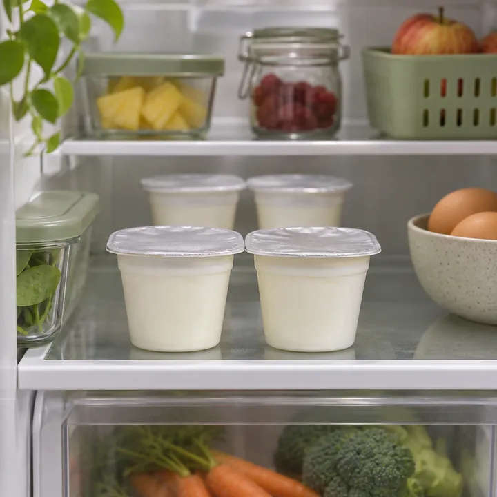

How to remember to use food before its date
Set aside space in the fridge and cupboard for food with the nearest date, and check it before you shop.

Make room at the front
Pick a spot in the fridge where food you plan to use soon is easy to see. Do the same on a cupboard shelf for things that can be stored at room temperature. When you get back from shopping, put new packs behind the ones with earlier dates and follow the storage instructions on each pack.
Decide when you’ll use it
While you check the shelf, choose two items and work them into a meal you already have planned. If two yoghurts need using soon, put them at the front and have them for breakfast tomorrow. Before writing your next shopping list, look at that shelf to see whether you need any more.
Try it after your next shop
Start with one shelf. If everyone at home uses it, call it “Use first” so anyone opening the fridge knows where to look.